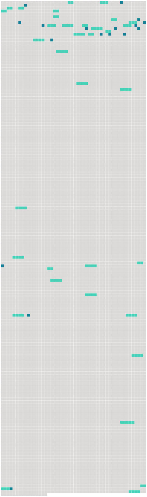

Longueur nb maillons : 51 mentions |
 |
Tout à coup, Roger posa la main sur le bras de Paul :
… » — « [Ce] n'est ni une baleine, ni un requin, dit Paul, il n'en existe pas de cette taille.
»
Mais [celui -ci] resta immobile. [1 phrases]
»
» [4 phrases]
D'un coup de talon sur [le monstre] , il revint à la surface. [1 phrases]
» tu ne devineras jamais ce que [c'] est!!
… » [1 phrases]
[c'] est [le « Nautilus] , » [le « Nautilus »] — « [Le Nautilus] !! » reprit Paul aussi excité que son ami, maintenant ; [ce bateau sous-marin] , [dont] les aventures extraordinaires ont tant amusé et intrigué notre imagination d'enfant. [1 phrases]
»
» [2 phrases]
» [5 phrases] … lorsque je lisais l'histoire [du « Nautilus »] , je rêvais d'habiter une ville sous-marine, avec un petit peuple de mon choix ; la terre avec toutes ses misères me semblait un domaine trop mesquin. [15 phrases]
Tous connaissaient l'histoire [du « Nautilus »] et du capitaine Nemo, et au grand étonnement de Paul, lorsque Roger, sans beaucoup de préambules, proposa son plan de ville sous-marine, il ne rencontra pas l'opposition qu'il avait redoutée. [2 phrases]
On décida de renflouer immédiatement [le « Nautilus »] , et dès le lendemain on se mit à l'œuvre. [100 phrases]
» [32 phrases] — « Il aurait dû être le gouverneur, car dans le renflouage [du « Nautilus »] , Paul a risqué vingt fois sa vie. [4 phrases]
» [1 phrases] Sans [le « Nautilus »] , nous étions condamnés à périr sur une île volcanique et déserte. Nous avons donné au capitaine des funérailles dignes de ses goûts et de ses exploits, et nous avons utilisé [le bateau] pour fuir les régions dangereuses où le naufrage nous avait jetés. [9 phrases]
[La résidence du gouverneur] était à l'une des extrémités de la ville ; les autres résidences se groupaient comme dans les rues d'une véritable ville. [12 phrases] Un jour que Roger et Paul étaient allés à terre, ils virent un homme assis sur un rocher, et qui examinait [le « Nautilus »] avec attention. [11 phrases] On retourna à [la résidence du gouverneur] , [où] un lunch était servi. [1 phrases]
Il était au centre de la ville et il semblait aussi grand que [le « Nautilus »] , mais comme ni Roger ni Paul n'avait proposé de le visiter, le prêtre n'osa pas le demander. [29 phrases] La naufragée reprit bientôt ses sens, et comme on ne pouvait pas convenablement l'installer dans [le « Nautilus »] , Roger demanda à Marcelle de la garder auprès d'elle, ce que celle -ci accepta avec empressement. [41 phrases]
Lorsque Roger reprit le chemin [du « Nautilus, »] il était distrait et préoccupé, ce qui n'était pas dans ses habitudes ; en entrant chez lui, il rencontra Paul à qui il dit d'où il venait, et celui -ci lui répondit : [45 phrases]
L'abbé Bernard et Roger sortirent les derniers de l'église, et se dirigèrent vers [le « Nautilus, »] [où] l'abbé éprouvait le besoin de se reposer, après tant d'émotions. [6 phrases] On avait fait transporter l'orgue [du « Nautilus »] dans l'église et préparé une belle messe, car les musiciens ne manquaient pas à Némoville. |
 |
La ressource peut être téléchargée sur la page Ortolang
Si vous avez des questions ou vous voyez des erreurs, merci d'envoyer un mail à silvia.federzoni89@gmail.com
Site développé par S. Federzoni (contact)